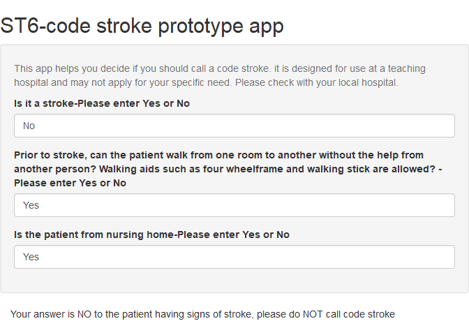

Chapter 12 App
There are several platforms for writing and deploying apps. Rstudio has created a library Shiny to write app. This app can be deployed by creating an account at https://shiny.rstudio.com/.
12.1 Brief introduction to Shiny app
Shiny divides the app to 2 component: ui or user interface web page and server or the engine for running the app. This app is used to assist if a stroke code should be activated. It uses the reactive call within server to switch between activating and deactivating code stroke.
library(shiny)
# Define UI for application
ui <- bootstrapPage(
titlePanel("ST6-code stroke prototype app"),
wellPanel(
helpText("This app helps you decide if you should call a code stroke. it is designed for use at a teaching hospital and may not apply for your specific need. Please check with your local hospital."),
#stroke
textInput('stroke',"Is it a stroke-Please enter Yes or No","No"),
#walk
textInput('walk',"Prior to stroke, can the patient walk from one room to another without the help from another person? Walking aids such as four wheelframe and walking stick are allowed? -Please enter Yes or No","Yes"),
#home
textInput('nursing',"Is the patient from nursing home-Please enter Yes or No","Yes")
),
#partition screen to 3 columns- sum to 12
column(9,
tabPanel(
textOutput("Hospital"),
textOutput("Walk"))
)
)
# Define server logic
server <- function(input, output, session) {
#stroke
answer<-reactive({
if(input$stroke=="No")
{return ("Your answer is NO to the patient having signs of stroke, please do NOT call code stroke")
} else {
return("Please call code stroke")
}
})
output$Hospital<-renderText({return(answer())})
#walk
answer1<-reactive({
if(input$stroke=="No")
{return ("Your answer is NO to the patient having signs of stroke, please do NOT call code stroke")
} else { if(input$walk=="No") {
return("Your answer is No, indicating that premorbidly the patient is unable to walk unaided, please do NOT call code stroke")
} else { if(input$nursing=="Yes") {
return("Your answer is Yes to the patient living in nursing home, please do NOT call code stroke")
}
}
return("Please call code stroke")
}
})
output$Walk<-renderText({return(answer1())})
}
# Run the application
shinyApp(ui = ui, server = server)##
## Listening on http://127.0.0.1:3862
This app is available at https://gntem3.shinyapps.io/ambmc. It was designed to explore deployment of mobile stroke unit (ambulance equipped with CT scanner for stroke treatment) in Melbourne (Phan et al. 2019). The app illustrates the use of slide ruler to enable user interaction. A picture can be inserted into the app by placing the picture inside sub-folder www. A web page can be inserted using html coding. Plotly object can be rendered wihtin shiny using the call renderPlotly. Leaflet map object can be rendered using the call renderLeaflet.
##
## Attaching package: 'DT'## The following objects are masked from 'package:shiny':
##
## dataTableOutput, renderDataTable## Loading required package: ggplot2## Warning: package 'ggplot2' was built under R version 3.6.1##
## Attaching package: 'plotly'## The following object is masked from 'package:ggplot2':
##
## last_plot## The following object is masked from 'package:stats':
##
## filter## The following object is masked from 'package:graphics':
##
## layout## Linking to ImageMagick 6.9.9.14
## Enabled features: cairo, freetype, fftw, ghostscript, lcms, pango, rsvg, webp
## Disabled features: fontconfig, x11## Warning: package 'dplyr' was built under R version 3.6.1##
## Attaching package: 'dplyr'## The following objects are masked from 'package:stats':
##
## filter, lag## The following objects are masked from 'package:base':
##
## intersect, setdiff, setequal, unionX1=read.csv("./Data-Use/Amb_geocoded_time.csv",header=TRUE,sep=",")
X2=read.csv("./Data-Use/Amb_toTPA_geocoded2.csv",header=TRUE,sep=",")
#remove row without values
X1=inner_join(X2, X1, by="Suburb")## Warning: Column `Suburb` joining factors with different levels, coercing to
## character vector#create dataframe
time<-data_frame(X1$minutestoRMH,X1$minutestoMMC,X1$minutestoAus,X1$minutestoAlfred,X1$minutestoBHH,X1$minutestoFrankston,X1$minutestogeelong,X1$minutestonorthern,X1$minutestoSH,X1$minutestoSVH)## Warning: `data_frame()` is deprecated, use `tibble()`.
## This warning is displayed once per session.#find min of each row
X1$TH=apply(time,1,min)
ui <- fluidPage(
titlePanel("Googling CT Ambulance for Stroke Codes-Prototype"),
wellPanel(
helpText("There are 2 hospitals (Royal Melbourne Hospital and Monash Medical Centre) designated to provide clot retrieval service for the State of Victoria. This app helps to explore optimal condition for the use of CT ambulance (Mobile Stroke Unit) versus usual ambulance in Stroke Codes. Move the widgets under the panels Model CT Ambulance and Model Usual Ambulance to see the effect on the territory of the CT ambulance. The interactive plot of CT ambulance travel time (y-axis) versus usual ambulance time (x-axis) indicates the suburb whereby the ambulance are likely to arrive at the same time. Click on the circle to get the name of the suburb.For the purpose of these simulations, the CT ambulance is assumed to be based at Royal Melbourne Hospital. A second base at MMC is proposed"),
tags$h5("The spatial point process simulations for clot retrieval in Melbourne and related publication can be accessed by clicking the link here"),
tags$a(href ="https://gntem2.github.io/Google-Map-to-Victorian-ECR-Hospitals/","Simulated Melbourne model"),
tags$a(href ="http://stroke.ahajournals.org/content/48/5/1353.long","Link to reference paper")
),
br(),
#create first column, width=3
column(3,
tabsetPanel(
tabPanel("Model CT Ambulance",
sliderInput("bins",
"Time (minutes) to process patient at scene by CT Ambulance- TPA:", min = 20,
max = 60,
value = 30) ,#30
sliderInput("bins1",
"Time (minutes) to process patient at scene by CT Ambulance-CT angiography:", min = 0,
max = 60,
value = 10),
sliderInput("bins10",
"Time (minutes) to process patient at scene by CT Ambulance-CT Perfusion:", min = 0,
max = 60,
value = 0),
sliderInput("bins11",
"Time (minutes) for telemedicine consult:", min = 0,
max = 60,
value = 0),
sliderInput("bins5",
"Time (minutes) to process patient at hospital for ECR after arrival from CT Ambulance:", min = 10,
max = 60,
value = 30) #30
),
tabPanel("Model Usual Ambulance",
#audit= 16 min
sliderInput("bins3",
"Time (minutes) from scene - usual Ambulance:", min = 10,
max = 60,
value = 15),
sliderInput("bins2",
"Time (minutes) to process patient at scene- usual Ambulance:", min = 10,
max = 60,
value = 20),
sliderInput("bins4",
"Time (minutes) to process patient at hospital for TPA after arrival- usual Ambulance:", min = 20,
max = 80,
value = 60), #45
sliderInput("bins6",
"Time (minutes) to process patient at hospital for ECR after arrival- usual Ambulance:", min = 30,
max = 90,
value = 30)
)
)
),
#create second column, width=6
column(6,
tabsetPanel(
tabPanel("CT vs Usual ambulance comparison", leafletOutput("map",height = "600px"),DT::dataTableOutput("table4"),p()),
tabPanel("2 hospital model", leafletOutput("map2"),p())
)
),
#create third column, width =3
column(3,
#insert pic from www folder
tags$img(height=100,width=150,src="./Data-Use/ctambulance.jpg"),
br(),
br(),
helpText("the percentage of suburbs where CT Ambulance is superior for delivering TPA"),
textOutput("sumctasupper"),
br(),
helpText("the percentage of suburbs where CT Ambulance is superior for delivering ECR-RMH only"),
textOutput("sumctaecrsupper"),
br(),
helpText("the percentage of suburbs where CT Ambulance is superior for delivering ECR to RMH and MMC"),
textOutput("sumecrRMHMMC"),
br(),
plotlyOutput("plot", height="250px")
),
br()
)
#server
server <- function(input, output,session) {
# Leaflet map with 2 markers
output$map <- renderLeaflet({
#TPA
X1$cta <- X1$minutesfromRMH+input$bins+input$bins1+input$bins10+input$bins11
#return to local hospital
X1$ua <-input$bins3+input$bins2 +input$bins4+X1$TH
#ecr at RMH (from RMH and return trip RMH)
X1$ctaecr <-X1$minutesfromRMH+input$bins+input$bins5+input$bins1+input$bins10+input$bins11+
X1$minutestoRMH
#ecr at MMC (from RMH and return trip MMC)
X1$ctaecrM<-X1$minutesfromRMH+input$bins+input$bins5+input$bins1+input$bins10+input$bins11+
X1$minutestoMMC
#ua ecr
X1$uaecr <-input$bins3+input$bins2 +input$bins4+input$bins6+X1$minutestoRMH
#TPA
X1$ctasup <- X1$cta <X1$ua
X1$ctasup[X1$ctasup=="TRUE"]<-1
X1$ctasup[X1$ctasup=="FALSE"]<-0
#ECR RMH
X1$ctaecrsup<-X1$ctaecr<X1$uaecr
X1$ctaecrsup[X1$ctaecrsup=="TRUE"]<-1
X1$ctaecrsup[X1$ctaecrsup=="FALSE"]<-0
#ECR MMC
X1$ctaecrMsup<-X1$ctaecrM<X1$uaecr
X1$ctaecrMsup[X1$ctaecrMsup=="TRUE"]<-1
X1$ctaecrMsup[X1$ctaecrMsup=="FALSE"]<-0
#to scene
X1$ctahist<-X1$cta-X1$ua
X1$ctaecrhist<-X1$ctaecr-X1$uaecr
#choose RMH
X1$chRMHMMC<-X1$minutestoRMH<X1$minutestoMMC
X1$chRMHMMC[X1$chRMHMMC=="TRUE"]<-1
X1$chRMHMMC[X1$chRMHMMC=="FALSE"]<-0
#choose MMC
X1$chMMC<-X1$minutestoMMC<X1$minutestoRMH
X1$chMMC[X1$chMMC=="TRUE"]<-1
X1$chMMC[X1$chMMC=="FALSE"]<-0
#ECR RMH MMC
X1$ecrRMHMMC<-X1$ctaecrsup*X1$chRMHMMC+X1$ctaecrMsup*X1$chMMC
X1$put<-input$bins
X1$put1<-input$bins1
X1$put10<-input$bins10
X1$put2<-input$bins2
X1$put3<-input$bins3
X1$put4<-input$bins4
X1$put5<-input$bins5
X1$put6<-input$bins6
PerCTA<-round(sum(X1$ctasup)/length(X1$ctasup)*100,1)
output$sumctasupper<-renderText({return(PerCTA)})
PerCTAECR<-round(sum(X1$ctaecrsup)/length(X1$ctaecrsup)*100,1)
output$sumctaecrsupper<-renderText({return(PerCTAECR)})
PerCTAECR2<-round(sum(X1$ecrRMHMMC)/length(X1$ecrRMHMMC)*100,1)
output$sumecrRMHMMC<-renderText({return(PerCTAECR2)})
#render plotly object
output$plot<-renderPlotly({
p<-ggplot(X1,aes(x=X1$minutesfromRMH,
y=95-X1$minutesfromRMH)) +
geom_point()+
stat_smooth(method="lm",aes(X1$minutesfromRMH))+
theme(legend.position = "none") +
xlab("Time advantage-Usual Ambulance") +
ylab("Time advantage CT Ambulance")
ggplotly(p)
})
output$plot2<-renderPlotly({
plot_ly(x=~(X1$uaecr), y=~X1$ctaecr, mode="markers",
text=~paste("Address:",X1$formatted_address,'<br>Time:', X1$minutesfromRMH),
#color=~(X1$minutesRMH-input$bins3),
marker = list(size = 10, color = 'rgba(255, 182, 193, .9)',
line = list(color = 'rgba(152, 0, 0, .8)',
width = 5))) %>%
layout(title = 'Time to Patient Location',
yaxis=list(title="Time to ECR by CT ambulance (minutes)",
zeroline = TRUE),
xaxis = list(title="Time to ECR by usual Ambulance (minutes)"
,zeroline = TRUE) %>% animation_opts(transition = 0)
)
})
#color pallette
pal <- colorFactor(palette = c("yellow","green"),domain = as.factor(X1$ctasup))
pal2 <- colorFactor(palette = c("red","blue"),domain = as.factor(X1$ctaecrsup))
pal3 <- colorFactor(palette = c("yellow","blue"),domain = as.factor(X1$chRMHMMC))
leaflet(data=X1) %>%
setView(145.1234,-37.92067,10) %>%
addTiles() %>%
#use javascript to link web page
addMarkers(lng=144.9559, lat=-37.79865,
popup="<b>RMH</b><br><a href= 'http://eso-conference.com/2018/scientific-information/abstract-submission'>-CT Ambulance base</a>") %>%
addMarkers(lng=145.1233, lat=-37.92073,
popup="<b>MMC</b><br><a href= 'http://eso-conference.com/2018/scientific-information/abstract-submission'>-Proposed second CT Ambulance base</a>") %>%
addCircleMarkers(lng=~long,lat=~lat,radius=4,fillOpacity = 1, stroke=F, color=~pal(X1$ctasup),group="TPA-CTA",label=X1$formatted_address) %>%
addLegend(pal=pal, values= X1$ctasup, opacity = 1,title = "TPA-CTA") %>%
addCircleMarkers(lng=~long,lat=~lat,radius=4,fillOpacity = 1, stroke=F, color=~pal2(X1$ctaecrsup),group="ECR-CTA",label=X1$formatted_address) %>%
addLegend(pal=pal2, values= X1$ctaecrsup, opacity = 1,title = "ECR-CTA") %>%
addLayersControl(overlayGroups = c("TPA-CTA", "ECR-CTA"), options = layersControlOptions(collapsed = TRUE)) %>%
addMeasure(primaryLengthUnit = "meters",
primaryAreaUnit = "sqmeters",
activeColor = "red",
completedColor = "red") %>%
addMiniMap(toggleDisplay = TRUE)
})
output$map2 <- renderLeaflet({
X1$chRMHMMC<-X1$minutestoRMH<X1$minutestoMMC
X1$chRMHMMC[X1$chRMHMMC=="TRUE"]<-1
X1$chRMHMMC[X1$chRMHMMC=="FALSE"]<-0
pal <- colorFactor(palette = c("yellow","blue"),domain = as.factor(X1$chRMHMMC))
leaflet(data=X1) %>%
setView(145.1234,-37.92067,10) %>%
addTiles() %>%
#use javascript to link web page
addMarkers(lng=144.9559, lat=-37.79865,
popup="<b>RMH</b><br><a href= 'http://eso-conference.com/2018/scientific-information/abstract-submission'>-CT Ambulance base</a>") %>%
addMarkers(lng=145.1233, lat=-37.92073,
popup="<b>MMC</b><br><a href= 'http://eso-conference.com/2018/scientific-information/abstract-submission'>-Proposed second CT Ambulance base</a>") %>%
addCircleMarkers(lng=~long,lat=~lat,radius=4,fillOpacity = 1, stroke=F,
color=~pal(X1$chRMHMMC),group="RMH-MMC-ECR",label=X1$formatted_address) %>%
addLegend(pal=pal, values= X1$chRMHMMC, opacity = 1,title = "RMH-MMC-ECR",position="bottomleft") %>%
addMeasure(primaryLengthUnit = "meters",
primaryAreaUnit = "sqmeters",
activeColor = "red",
completedColor = "red") %>%
addMiniMap(toggleDisplay = TRUE)
})
}
shinyApp(ui = ui, server = server)##
## Listening on http://127.0.0.1:7374
References
Phan, T. G., R. Beare, M. Parsons, H. Zhao, S. Davis, G. A. Donnan, V. Srikanth, and H. Ma. 2019. “Googling Boundaries for Operating Mobile Stroke Unit for Stroke Codes.” Front Neurol 10: 331.